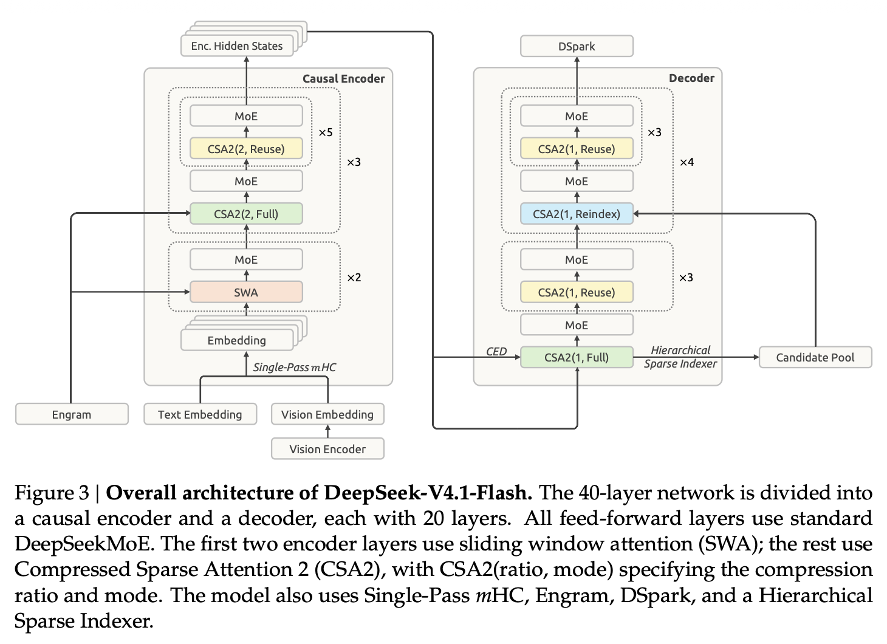
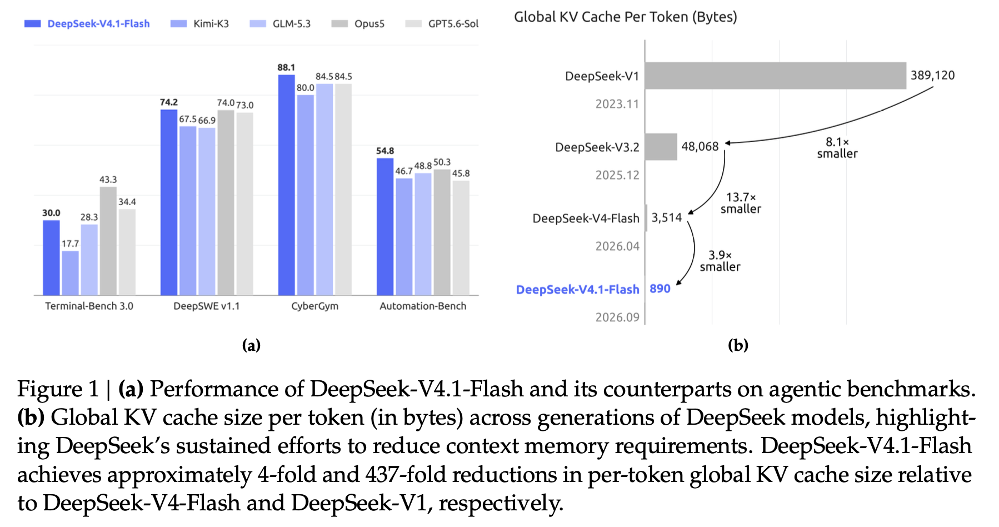

近年、人工知能（AI）の世界は目覚ましいスピードで進化を続けており、その最前線には人間に匹敵する高度なテキスト理解と生成能力を持つ Large Language Model (LLM) が存在する。しかし、モデルが複雑化し、対応可能なタスクの幅が広がるにつれて、計算コスト、メモリ使用量、そしてデプロイメントの効率性が極めて大きな課題として浮上している。
特に「Long-horizon agents（長期的なタスクを実行するAIエージェント）」の普及により、現代のAIワークロードは入力データが非常に大きい（Input-heavy）性質を持つようになった。本稿では、この長大なコンテキスト処理に伴うボトルネックを根本から解決し、推論時の KV cache 圧縮の限界を押し広げた画期的なマルチモーダル Mixture-of-Experts (MoE) モデルである DeepSeek-V4.1-Flash の技術レポートを深掘りする。
ロングコンテキストにおけるボトルネック
現代のLLMアプリケーションにおいて、長大なテキストやデータを処理することは決定的なボトルネックとなりつつある。これまでの研究によりロングコンテキストの計算自体は効率化されてきたものの、入力データを最初に処理する「Prefill（事前充填）」段階の計算コストは依然として高い。
さらに深刻なのが KV cache の問題である。自己回帰的なテキスト生成を高速化するために中間状態を保持する KV cache は、コンテキスト長に比例して増大し、High Bandwidth Memory (HBM) や SSD の容量、さらにはデータ転送用のメモリ帯域幅を激しく圧迫する。この計算量、ストレージ、および帯域幅の要求の組み合わせが、AIのデプロイメントコスト削減とスケーリングを阻む最大の障壁となっていた。
DeepSeek-V4.1-Flash：アーキテクチャの革新
DeepSeek-V4.1-Flashは、552B（5520億）のバックボーンパラメータを持ち、最大 100万トークン（1M tokens） のコンテキストをサポートするマルチモーダルMoEモデルである。その真の革新性は、単なるスケールアップではなく、計算とメモリの効率化を極限まで追求したアーキテクチャ設計にある。

Causal Encoder-Decoder (CED) アーキテクチャ
エージェントのワークロードにおける Prefill コストを削減するため、DeepSeek-V4.1-Flashは Causal Encoder-Decoder (CED) と呼ばれる構造を採用している。
標準的なTransformerでは全レイヤーで入力トークンの処理を行うが、CEDでは下位 \(L/2\) のレイヤーをエンコーダとして扱い、上位レイヤー（デコーダ、\(l > L/2\)）のグローバル KV は、エンコーダの最終隠れ状態 \(H_{L/2}\) から直接射影（Projection）されて生成される。
\[C_l = H_{L/2} W_l^{KV}, \quad l > \frac{L}{2}\]
この設計により、Prefill 段階では実質的に下位半分のレイヤーのみを計算すれば上位レイヤーのグローバル KV cache を取得できる。結果として、デコード時には 16B のパラメータがアクティブになるのに対し、Prefill 時にはわずか 8B のパラメータしかアクティブにならず、入力ヘビーなタスクにおけるコスト効率が劇的に向上する。
Compressed Sparse Attention 2 (CSA2) による極限のKV cache圧縮
長いコンテキストをサービングするには、KV cache のサイズそのものを削減する必要がある。DeepSeek-V4.1-Flashは、レイヤー間のキャッシュ再利用と Top-K インデックスの共有を組み合わせた Compressed Sparse Attention 2 (CSA2) を導入した。
CSA2の各レイヤーには、静的に以下の3つのモードのいずれかが割り当てられる。
- Full Mode: メイン KV とインデクサ Q を自身で計算し、フレッシュな Top-K インデックスを生成する。
- Reindex Mode: 前方のレイヤーからメイン KV とインデクサ K を再利用（共有） し、自身で計算した Q を用いてインデックスの再スコアリングのみを行い、新たな Top-K インデックスを生成する。
- Reuse Mode: 前方のレイヤーからメイン KV と、そこで計算された Top-K インデックスの両方を再利用し、インデクサの計算を完全にスキップして直接スパースアテンションを実行する。
さらに、デコーダにおけるインデックス探索空間を劇的に削減する Hierarchical Sparse Indexer（階層的スパースインデクサ） が導入されている。最初の Full Mode レイヤーがコンテキスト全体から「候補プール」を選択し、後続の Reindex Mode レイヤーはこの限定されたプール内のみを探索する。これにより、クエリごとの探索コストがコンテキスト長に依存する線形 \(\mathcal{O}(N)\) から定数 \(\mathcal{O}(1)\) へと削減される。
デプロイメント最適化と推論システムの高度化
DeepSeek-V4.1-Flashはアーキテクチャの変更に加え、精度（Precision）とデプロイメント戦略の面でも画期的なアプローチを採用している。
FP4 メイン KV Cache と SWA Bounded Replay
CSA2に加えて、メイン KV cache に対して Quantization-Aware Training (QAT) を適用し、FP4 (OCP標準のMXFP4フォーマット、具体的にはE2M1) へと量子化している。これにより、精度低下を最小限に抑えつつストレージのオーバーヘッドを半減させた。 これらのアーキテクチャ上の工夫とFP4 KV cachingにより、HBM上に常駐するグローバル KV cache のフットプリントは、1トークンあたり約 890 bytes にまで圧縮された。これは前世代の DeepSeek-V4-Flash のわずか 1/4 のサイズである。
さらに、ストレージ（SSDやホストメモリ）に永続化される Persistent KV cache に関して、SWA Bounded Replay というデプロイメント最適化が導入された。 局所的な文脈を捉える Sliding-Window Attention (SWA) の KV cache は、これまでプロンプトの終端などでディスクに保存（永続化）されていたが、短時間のマルチターン対話ではこれがストレージの無駄となっていた。SWA KV を完全に復元するには \(L \times n_{win}\) トークン（\(L\)はレイヤー数、\(n_{win}\)はウィンドウサイズ）の再計算が必要であり現実的ではなかったが、DeepSeek-V4.1-Flashでは、直近の \(n_{win}\) トークンのみをリプレイして近似的に SWA KV を再構築する。
この手法により応答品質を損なうことなく、SWA KV を Persistent KV cache から完全に除外することが可能となり、Persistent KV cache のフットプリントは前モデルの約 1/8 へと劇的に削減された。
さらなるアーキテクチャ拡張技術
- Single-Pass mHC: 前モデルで導入された多重残差接続（mHC）カーネルのメモリトラフィックを半減させる技術。入力混合（Input mixing）の係数を1ブロックずらすことでデータ依存性を解消し、Mega-mHC カーネルとして融合（Fusion）することで、メモリアクセスを理論的下限である \((2n+2)d\) に抑えている。
- Engram: モデルの記憶と計算を分離する条件付きメモリ（Conditional memory）モジュール。
- DSpark: 推論効率を飛躍させる Speculative Decoding（投機的デコード）アーキテクチャ。半自己回帰的なドラフト生成を行う。
卓越したパフォーマンスと推論エフォートの制御
これほどの劇的な効率化とパラメータ活性化数の削減（13Bから8B/16Bへ）を実現しながらも、DeepSeek-V4.1-Flashは一切の性能妥協を見せていない。45T（45兆）トークンにおよぶマルチモーダルコーパスで事前学習（Pre-training）され、広範なベンチマークにおいて前モデルやトップクラスの競合モデルを凌駕している。
- 推論とコーディング: 数学（MATH, MGSM）や競技プログラミング（Codeforces）において、トップクラスのオープンソースモデルと同等の推論能力を発揮する。
- エージェント能力 (Agentic Capabilities): Terminal-Bench や DeepSWE v1.1 などのエージェントベンチマークにおいて、Opus-5 や GPT-5.6 Sol のような最先端のクローズドソースモデルに匹敵するパフォーマンスを記録した。
- マルチモーダル理解: 視覚的な推論や専門的なチャート解釈においてトップクラスのオープンソースモデルを上回り、フロントエンド開発やオフィスオートメーションといった実世界での視覚的エージェントワークフローにおいて高い実用性を示す。

制御可能な Reasoning Effort (推論エフォート)
Post-training（SFT, RL, OPD）の段階において、DeepSeek-V4.1-Flashはアルゴリズムの新規性よりも、データ合成と環境構築のパイプラインスケールに注力している。特筆すべきは、Reinforcement Learning (RL) の段階で Reasoning Effort（推論エフォート） と呼ばれるスカラー値 \(b \in \{1, \dots, 100\}\) を導入した点である。
RLの報酬設計において、出力トークン長 \(\ell\) に対するペナルティ項 \(r_{len}\) がエフォート \(b\) に応じて指数関数的に減衰するように設計されている。
\[r_{len} = - \min \left( C_{max}, k(b) \frac{\ell}{L_{norm}} \right)\]
ここで、ペナルティ係数 \(k(b)\) は \(b\) の増加に伴い小さくなるため、高いエフォート値（例：\(b=100\)）を与えると、モデルはより長いトークンを費やして深い推論（Exploration と Verification）を行うようになる。デプロイメント時には、APIを通じてこの \(b\) を調整するだけで、推論コスト（レイテンシとトークン消費）と回答品質のトレードオフを動的に制御することが可能である。
まとめ
DeepSeek-V4.1-Flashは、大規模な AI エージェントの普及に向けた最大の障壁であった「ロングコンテキスト処理の計算コストとメモリリソース」を劇的に削減することで、高機能な AI のアクセシビリティを新たな次元へと引き上げた。
Causal Encoder-Decoder による Prefill コストの半減、CSA2 と FP4 による HBM KV cache の1/4への圧縮、そして SWA Bounded Replay による SSD KV cache の1/8への削減。これらのハードウェアやシステムの制約と深く結びついたアーキテクチャの共同最適化（Co-optimization）は、AI モデル開発の新たなベンチマークとなるだろう。
計算リソースの制約から解き放たれた高効率かつ強力な AI エージェントが、多様な産業において実世界の複雑なタスクを自律的に解決する未来は、我々が想像するよりもはるかに早く到来するかもしれない。
参考文献
DeepSeek-V4.1-Flash Technical Report: DeepSeek_V41_Tech_Report.pdf
モデルチェックポイント: https://huggingface.co/deepseek-ai/DeepSeek-V4.1-Flash